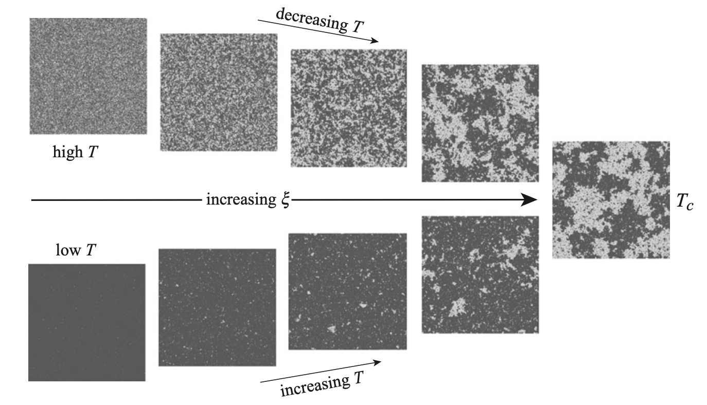

Phase transitions through the lense of Ising models
Contents
Phase transitions through the lense of Ising models¶

A. bit of history: Ising model and phase transitions¶
1895 Pierre Curie in his doctoral thesis studies types of magnetism, discovers
The effect of temperature
A phase transition happening at the Curie point
The phenomenon occurs at the atomic scale

1920 Lenz introduces a lattice model for ferromagnetism
Lenz argued that “atoms are dipoles which turn over between two positions”:
in a quantum-theoretical treatment they would by and large occupy two distinct positions.
1920 Lenz suggests a project to his PhD student who comes up with a 1D model of spin lattice
Each square represents spin state either +1 or -1
Only nearest-neighbouring spins interact
1924 Ernst Ising PhD thesis. Conlcusion: No phase transition!?
Ising finds no phase transition in dimension 1
Dismisses the models as too simplistic and mathemtical. Wrongly concluded that there is no phase transition in all dimensions.
Leaves science to teach college physics.
The paper was widely discussed (Pauli, Heisenberg, Dirac, …) with a consensus that it is oversimplified.
1936 Rudolf Peierels: Unexpectedly proves that in dimension 2 the Lenz-Ising model undergoes a phase transition!!!
reignites the interest in Ising models
His perhaps more influential work: 1940 memorandum with Otto Frisch often credited with starting the Manhattan project

1941 Kramers-Wannier calculate critical Temperature
1944 Onsager solves 2D Ising model, analytically
Widely regarded as one tour de force of theoretical physics.
Partition function, magnetization and other quantities derived
Larse Onsager was trained as a chemists. Many other Chemists, most notably Ben Widom contributed to theory of phase transition.
1944- Ising model becomes a household system for studying phase tranistions
From 1944 widely studied in mathematical physics, with many results by different methods:
Regained prominence in physics, used in biology, chemistry, economics, computer science…
1970s Renomralization Group (RG) theory is developed by Kenneth Wilson (Nobel Prize 1982)
The Curie critical point is universal and hence translation, scale and rotation invariant.
Ideas of Renormalizeation, scale invariance, universality and coarse graining widely enter into statistical mechanics.
1985 Conformal Field Theory
Ising models: The H atom of phase transitions¶
1st order vs 2nd order phjase transition¶

Analogy with fluid phase transitions¶

Critical Phenomena: Correlation length diverges¶



Main extensive thermodynamic quantities, \(E\) and \(M\)¶
Energy of spin configuration [s]
Total magnetization, \(M\)
Magnetization per spin \(m\)
Fluctuations, correlations and susceptibilities¶
Heat capacity \(C_v\)
Heat capacity is again the familiar expression established in our treatment of canonical ensemble.
Susceptibility \(\chi\)
Magnetic susceptibility quantifies response of the ssytem to the variation of magnetic field.
Correlation function \(c(i,j)\) and correlation length
At high temperatures, spins on an ising lattice point up and down randomly. While at low temperatures, all spins tend to align. To quantify the degree of alignment, we can define a quantity named correlation length \(\xi\), which can be defined mathematically through correlation function \(c(i,j)\)
Parition function and Free energy¶
Free energy as a function of M (Potential of mean force)
The Z(M) is a partial sum over states for which magnetization is equal to a particular value M as opposed to Z where summation is unrestricted.
Some notable applications of Ising models. More applications are found here¶
Ferromagnetism The Ising model is the scalar version of the three-dimensional ‘Heisenberg model’ :
Binary alloys and lattice gases Each lattice site is occupied either by an atom A or B. Nearest neighbour interac- tions are \(\epsilon_{AA}\), \(\epsilon_{BB}\) and \(\epsilon_{AB}\). We identify \(A\) with \(s_i = 1\) and B with \(S_i = −1\). The Hamiltonian then is: \(H = − ∑ J_{ij}s_is_j \langle i,j\rangle\) with \(J_{ij} = \epsilon_{AB} − 0.5(\epsilon_{AA} + \epsilon_{BB})\). Thus the Ising model describes order-disorder transitions in regard to composition.
Spin glasses now each bond is assigned an individual coupling constant J and they are drawn from a random distribution. E.g. one can mix ferromagnetic and anti-ferromagnetic couplings. This is an example for a structurally disordered system, on top of which we can have a thermal order-disorder transition.
Conformations in biomolecules a famous example is the helix-coil transition from biophysics. \(s_i\) a hydrogen bond in a DNA-molecules is closed; \(s_i\) = −1 the bond is open. The phase tran- sition is between a straight DNA-molecule (helix) and a coiled DNA-molecule. Other examples are the oxygen-binding sites in hemoglobin, chemotactic recep- tors in the receptor fields of bacteria, or the molecules building the bacterial flag- ellum, which undergos a conformational switch if the flagellum is rotated in the other direction (switch from run to tumble phases).
Neural networks representing the brain \(s_i = 1\) a synapse is firing, \(s_i = −1\) it is resting. The Hopfield model for neu- ral networks is a dynamic version of the Ising model and Boltzmann machines recognise handwriting by using the Ising model.
Spread of opinions or diseases Spread of opinions, rumours or diseases in a society; these kinds of models are used in socioeconomic physics. If nearest neighbour coupling is sufficiently strong, the system gets ‘infected’.
The Peierls argument for presence/absence of phase transitions in 1D, 2D and 3D¶
Starting around 1933, Peierls published scaling arguments why a phase transition should occur in 2D as opposed to 1D
No phase transition in 1D at T>0¶
1D case Start with 1D chain of all spin up configuration and create an isalnd of oposite spins.
Energy cost is:
Entropy cost is:
Free Energy differnece:
Thus free energy for \(N\gg1\) is always negative for any finite temperature. It is always favorable to create grain boundaries due to entropic reasons.
Phase transition in 1D cannot occur at finite temperature!
Phase transition in 2D at \(T>0\) realizable¶
In 2D and 3D introducing isalnd of spins creates a surface spins sproportional to linear size of the island L which is now a macroscopic quantitiy comparable to N
Energy cost is:
Entropy cost using a crude estimate of random walk on cubic lattice is:
Free Energy differnece:
Analytic solutions for 1D Ising model¶
Case-1: \(h\neq 0\) and \(J=0\)¶
Free energy
Energy. Obtained by ensemble average of Ising Hamiltonian. Which comes down as simply the average of single spin multipled by number of spins
Entropy can be computed as \((U-F)/T\) or as \(S=-\frac{\partial F}{\partial T}\)
Heat capacity $\(c = \frac{1}{N}\frac{\partial U}{\partial T} = k_B \beta^2 B^2 sech^2 (\beta B)\)$
We see that heat capacity goes to zero at both \(T=0\) and \(T=\infty\)
import ipywidgets as widgets
import matplotlib.pyplot as plt
import numpy as np
import scipy as sp
@widgets.interact(kbT=(0.1,10))
def mag1(kbT=1):
x = np.linspace(-10,10,1000)
plt.plot(x, np.tanh(x/kbT), lw=3, label=f'$k_B T={kbT}$')
plt.xlabel('h, magnetic field',fontsize=16)
plt.ylabel('m, magnetization',fontsize=16)
plt.legend(fontsize=16)
Case-2: \(h= 0\) and \(J\neq 0\)¶
We use free boundary conditions
Let \(\tau_1 =s_1\) and \(\tau_j =s_{j-1} s_j\) for \(j\geq 2\)
There will be an overall factor of 2 in front of partition function becasue of summation over \(\tau_1\)
Case-3: \(h \neq\) and \(J\neq 0\) and Transfer Matrix technique¶
We write hamiltonain in this symmetric form consisting of sums of \((s_j, s_{j+1})\) terms for presenting partiion function as product of terms.
Transfer matrix has been introduced:
While compared to previous examples partition function did not factor out into single particle contributions we nevertheless have factored the partition function as product of 2 by 2 matrices!
Note the close connection of matrix technique applied to partion functions with mathematical formalism of quantum mechanics!¶
In quantum mecchanical notation \(T_{j,j+1} = \langle s_j | T | s_{j+1}\rangle\) can be seen as an operator that propagates or transfers state from spin \(j+1\) to spin state \(j\).
Trace of matrix is invariant to unitary trasnformation \(U^{-1} T U =D\) which we can use to diagonalize the matrix \(T\) which then allows to us to write the N product in terms of two diagonal elements:
Problem is reduced to diagonalizing the transfer matrix
Thus we have arrived at an exact solution for the one dimension Ising model with external field:
No phase transition at finite \(T>0\) is posisble for 1D ising model as free energy remains analytic for T>0